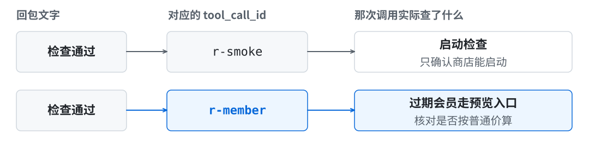
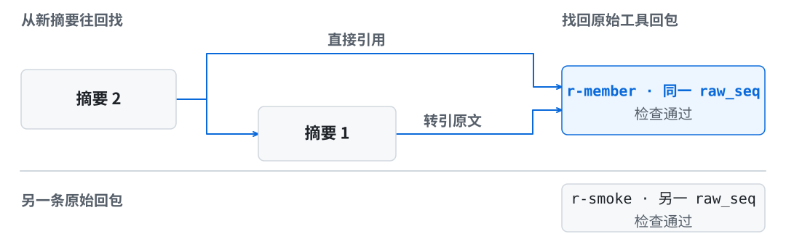

摘要漏掉要求时，怎样找回当时的原话
摘要写着“会员日志已保留，检查通过”。用户接着问：“我说过会员预览也要查。过期会员在预览里按什么规则算价？”如果把那句“通过”直接当答案，连查的是哪个页面都说不清。
我会先沿上一章随摘要保存的原文入口找两样东西。先确认用户当时怎么说，再找哪一次检查按这个要求跑过。
先从摘要找回用户原话
按摘要留下的 ID 回读
摘要末尾有 [原文归档:summary-demo-2]。把这个示意 ID 交给 ArchiveRead，沿归档向前翻，能看到写摘要时用到的原记录。下面是读回材料后摘出的三行。
user 只改普通价的折扣；会员预览也要检查，过期会员用普通价。 tool(r-smoke) 检查通过 tool(r-member) 检查通过
“会员预览也要检查”这条要求已经找回。如果手里缺的是归档 ID，用户也可以用本会话的 /archive list 看记录索引。找到要求之后，接着核对当时是否照着做了。两条回包都写“检查通过”，先不要从它们的位置或文字猜哪个跑了专项用例。
用回包编号找到对应调用

从 tool_call_id 往前查 assistant 发出的命令。r-smoke 只检查商店能启动，顶多证明最基本的流程能跑。r-member 指向会员预览的专项命令，再核对它确实构造了过期会员，经过预览入口，断言价格等于普通价。只有这组调用与结果对上，才能用其证明当时那项检查通过。只留下“检查通过”四个字，两个结果就会变得无法区分。
现在可以回用户：“按原约定，过期会员在预览里按普通价。r-member 证明当时那版通过了专项检查。如果后来改了价格入口，得用当前版本再跑一次。”
只换一个条件。要是归档里有专项命令，却缺它配对的回包，我会把会员预览重新列回待查项。从命令能看出原本要查什么，还得找到结果才能说它通过。
同文的两条回包，归档里仍是两条
这两份“通过”确实发生了两次。若存按会话和执行范围为每条追加的原文分配递增的 raw_seq，初始版本为 1。r-smoke 和 r-member 各有一个原文序号。现有消息若只补了图片投递等受支持的元数据，仍用原序号，加一版并记住上一版的身份。这样既能看到一条消息如何演进，也能分辨两次独立的动作。tool_call_id 对应一次工具调用，raw_seq 对应一条原消息，summary-demo-2 引到一组用来派生摘要的记录。 原文序号及版本的分配
按文字去重会少掉一次用户确实说过的话。现有回归测试连续保存两条文字完全相同的用户消息，关闭并重开存储后，断言导出的历史仍保留两条。重复消息的归档测试
第二份摘要可以沿第一份找到原文
第一次压缩后，模型拿到的是改短的新历史。归档里仍有已接纳、脱敏后的原消息及附件引用。若存把候选摘要或裁剪记录和它引用的来源一起保存。再压一次时，第二份摘要可能直接引用一条原文，也可能沿第一份摘要追到同一条。两条路径最终都指向同一份材料。

saved = index[source]
if saved["kind"] == "raw":
key = (saved.get("origin_session"), saved.get("origin_scope", scope), saved["raw_seq"])
if key not in originals or saved["version"] > originals[key]["version"]:
originals[key] = saved
else:
for child in saved.get("sources", []):
expand(child, trail | {source})沿两份摘要都找到了会员专项的回包，终点是同一条原消息，回查时展示一次就够了。可冒烟测试也写着“检查通过”。把这两条回包按文字合并，读者就少了一次调用的证据。最后的 else 会沿摘要的来源继续翻。每次碰到原文，程序都用原会话、原执行范围和 raw_seq 核对是不是同一条。若翻到同一条原文的不同版本，取能查到的最高版本，最后再按原文序号排列。 保存投影及来源 · 展开、去重和排序
回退或清空只移动当前使用的投影，并记下历史边界，早先归档不会随之删除。分支从要继承的投影出发，复制沿来源和旧版本能抵达的记录。比如工作分支带了那份摘要，才能沿它查到会员专项。这个分支带走的是材料，也要按自己当前的执行授权办事。 投影边界 · 分支如何复制来源
找到足够的证据就停
下一页从回包给的位置接上
假设正在查专项结果，页长设为 64 个字符。下面单独拿两份检查回包演示分页。真实回查还要找原话与发起调用的消息。ArchiveRead 返回的外层是 JSON，里面的 text 是原文序列化后的字符片段，一条记录可能横跨两页。
请求第 1 页
{"id":"summary-demo-2","offset":0,"limit":64}
{
"id": "summary-demo-2",
"scope": "main",
"kind": "summary",
"text": "[{\"content\":\"检查通过\",\"role\":\"tool\",\"tool_call_id\":\"r-smoke\"},{\"con",
"total": 118,
"next_offset": 64
}第一页出现了 r-smoke，后面只有第二条记录的开头。继续使用同一 ID，offset 填 next_offset 给的 64。第二页读到 r-member，next_offset 是 null，这份示例归档已经读完。要把整份来源读成结构化消息，就按顺序拼完每页的 text 再解析。要回答一个具体问题，找到用户原话和足以核对的专项调用、回包之后，就可以停。这样省下来的窗口留给正在做的任务。如果翻到底仍缺对应调用或结果，就说明手里的记录不足，接着做当下所需的验证。 原文切片、总字符数和下一页
归档 ID 在当前执行范围使用
模型能填的是 id、从 0 开始的 offset 和范围为 1 至 16,000 的 limit，默认一页 4,096 个字符。执行器给主代理绑定当前会话和主范围，给有此工具的子代理绑定自己的运行范围。没有绑定就拒绝。即使子代理看见了父代理的归档 ID，只有实际继承到它所属范围的记录才读得到。这个设计把读取约束留在工具和存储层，也意味着跨范围协作时要明确交接哪些材料。 ArchiveRead 参数与绑定检查 · 主会话的绑定 · 子执行的绑定
CoreCoder 的会话加载器先规整会话名，再确认解析后的文件仍在会话目录内。它要决定的是能打开哪个会话文件。若存的运行时已选好会话，ArchiveRead 要回答后一步：当前这次执行能从该会话里读到哪些归档。找到原话就有了历史证据；要照着历史材料动手，还要查当前权限。 CoreCoder 会话存取篇
手里有摘要 ID 时，我会先追它指向的原记录，范围就是写这份摘要实际用到的材料。手里只剩“检查通过”四个字时，ArchiveRead 还缺可读的 ID。启用可选会话查询插件的 DeepSeek Harness，可以用 session_event_search 在有权访问的会话里按字面找候选，再核对候选各自的命令和回包。能从文字起步的代价，是插件启用时每次请求会带上固定的说明和五个工具的定义。 DeepSeek Harness 可选会话查询工具
有专项回包，还少了什么？
有一份会话仍留着用户对过期会员的要求。第一页找到了 r-member 的“检查通过”，对应命令尚未找到，回包里还有 next_offset。现在能答用户“会员预览通过”吗？
检查你的证据
还要在同一授权范围内找 r-member 对应的命令和能核对的断言范围，比如用它前面的原文页面补齐命令。如果命令跑的是续费入口，现有结果只证明该入口通过。应把会员预览留作待查。如果命令和回包合起来确实覆盖过期会员在预览入口的普通价，就可以停止回查这项历史事实。
检验摘要质量也可以用这份底稿。分别让完整历史、仅有摘要和回读原文后的历史回答同一个问题，再拿用户原话、命令和回包核验答案。这样能发现哪些遗漏要靠回查才能补回，也能发现回查后仍缺的证据。
这一章带走什么
摘要只说“检查通过”，就沿归档 ID 把用户原话和那次测试的证据找回来。启动检查和过期会员预览都可能回一句“通过”。能给当时的会员预览作证的是走过预览入口的那条专项命令，以及同一次调用的结果。
两份摘要沿不同路径找到同一条原消息，回查时展示一份就够了。启动检查和会员专项实际跑了两次，写出同一句“通过”，归档里也得留着两条回包。
假如找回的原文是一大段测试日志，下一次请求还要带上它。这时换了工作目录，新目录这一句放在日志前面还是后面？
面经自测
摘要漏掉了用户的一条要求，后面的任务做错了，怎么发现和补救？
未具名 B 端公司 · 项目面 · 面经原帖 · 题意转述
展开参考回答
我会把摘要里的结论和当时的用户原话、实际命令和回包逐一对上。少了一条要求，就把受影响的工作列出来补查。
比如摘要写着“检查通过”，我顺着归档发现只有冒烟测试的输出，就接着找会员用例；没有那次运行记录，会员预览还要重新验证。
父 Agent 交任务给子 Agent 时传哪些上下文？材料太长怎么办？
腾讯 · 一面 · 面经原帖 · 题意转述 可回看 第 12 章 第 13 章
展开参考回答
先说清查什么、能看哪些材料、要交回哪条证据。原始日志很长，就交给它自己有权限打开的记录位置。这样它查到“检查通过”后，还能核对究竟是哪一个用例。
Agent 有查询工具时，怎么防止它读到超出用户权限的数据？
深信服 · 一面 · 面经原帖 · 题意转述 可回看 第 5 章 第 12 章
展开参考回答
由程序决定能查谁的记录。模型可以给出编号，若存仍只在绑定的会话或这次子任务能访问的材料里找。
压缩上下文节省了 token，怎样判断后面的回答质量有没有下降？
小红书 · 一面 · 面经原帖 · 题意转述
展开参考回答
我会拿同一批依赖旧信息的问题，分别问压缩前后的 Agent，再按用户原话和实际输出判分。直接答对、回查后才答对、仍然答错，要分开记。
在若存里，两次测试都写着“检查通过”。我问会员用例实际跑的是哪条命令。压缩后如果拿冒烟测试来作证，这道题的质量就下降了。
你能用运行记录还原一次任务实际做了什么吗？
腾讯 · 一面 · 面经原帖 · 题意转述
展开参考回答
可以。我用调用编号把工具结果配回当时的请求，找出命令和输出。缺少其中一段，就说明哪项还没有证据。
两条工具结果都叫“检查通过”，若存为什么把两条都存下来？
若存设计题
展开参考回答
归档第一页只有冒烟测试，怎么接着找会员用例？什么时候停？
若存设计题
展开参考回答
沿用同一个归档编号，按回包给的下一页起点读。找到能核实的命令和结果就停，读到末尾还找不到就说尚未证实。
若存给的起点叫 next_offset。即使第二页写了“检查通过”，我也要把它配回测会员的那次调用。